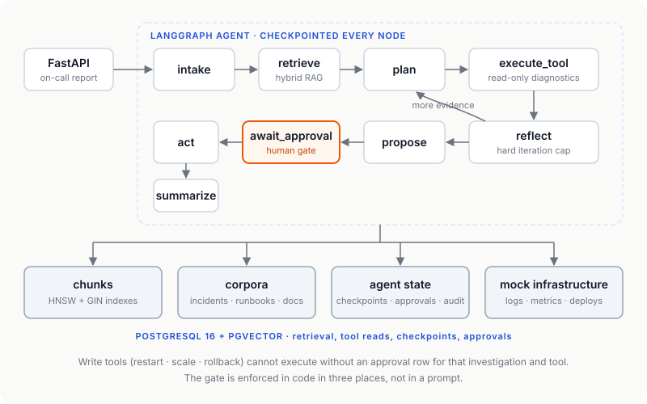

Case study · Agentic AI · Backend
IncidentIQ
An incident-response agent for on-call engineers. It retrieves incident history and runbooks, runs read-only diagnostics, reasons over several steps, and proposes a fix. Anything that would change production stops and waits for a human.
Why I built it
Most agent demos skip the parts that matter in production: what happens when the process dies mid-investigation, what stops the model from restarting a service on its own, and whether anyone actually measured it. I built IncidentIQ around those three questions.
- Durable state: the graph checkpoints after every node, so an investigation survives a crash and resumes.
- Structural safety: write actions are gated in code, not by prompt wording.
- Real evaluation: a harness that produces numbers, including bad ones.
Architecture

Bounded reasoning loop
plan → execute_tool → reflect has a hard iteration cap enforced in control flow. A model that always says "keep going" still terminates.
Re-retrieval after every tool call
Retrieval on the bare report scores Recall@5 0.461; enriched with observed error signatures it scores 0.800. Once tools surface those signatures, retrieving again is worth an iteration.
Approval gate in three places
A tool-class attribute, LangGraph's interrupt_before with a checkpoint written, and a runtime check requiring an approval row naming that investigation and tool.
Results
Retrieval · 12 labelled situations
| Recall@5 | 0.800 |
|---|---|
| Hit@5 | 0.917 |
| MRR | 0.917 |
| Median latency | 28.7 ms |
Hybrid: pgvector cosine + Postgres full-text, weighted reciprocal rank fusion, bge-small embeddings, service pre-filter.
Agent · 10-scenario stratified sample
| Task completion | 50% target ≥ 90% |
|---|---|
| Abstention accuracy | 100% |
| Tool execution success | 81.2% 32 attempts |
| Groundedness | not yet scored |
Run against a local 14B model at a 3-iteration cap, so completion is a lower bound. Groundedness stays unscored until judge calibration is done.
What the 50% taught me
Where the failures are matters more than the score. Two of five failures were under-commitment: the agent reached the correct diagnosis ("connection pool exhaustion") and then abstained. That is the cost of prompts that push hard toward abstaining rather than fabricating, which is also why every abstention scenario passed. The trade-off is now measured, not assumed.
Two more were hallucinated tool arguments, both refused by the tool's own schema validation after a human had approved, which is exactly why validation sits behind the approval gate too.
Engineering findings
JSON mode guarantees syntax, not schema
Past ~3k prompt tokens the model returned valid JSON with the wrong keys, so every field parsed as empty. Fixed with grammar-constrained decoding from a JSON Schema, then again by adding a required array.
Retry classification beats retry count
An unknown service name was treated as transient, so retries burned the whole budget. Argument errors now break the loop and return a correction ("Did you mean: checkout-service?") via trigram similarity.
Error text is prompt
A validator said a version "should look like 'v1.2.3'", and the agent then proposed rolling back to v1.2.3 on a service deployed at v2.27.x. Messages that feed back into an agent's context are part of its prompt.
Hybrid retrieval needs real identifiers
Hybrid only beat dense retrieval once incident write-ups contained the actual error tokens (HikariPool, x509). Its real value: holding Recall@5 at 0.800 without a service filter, while vector-only drops to 0.728.
What's next
- Approval API endpoints and audit-trail exposure (Phase 4)
- React/TypeScript frontend: investigation, evidence, approval, and trace views (Phase 5)
- Langfuse instrumentation (provisioned, not yet emitting traces)
- Full 100-scenario run against a frontier model through the existing provider interface
- MCP server exposing the diagnostic tools (Phase 6)